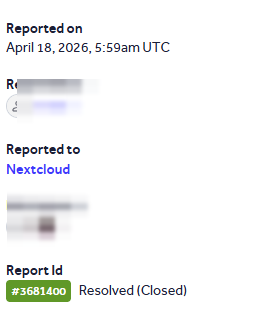

Introduction
While reviewing Nextcloud's user-management functionality, I found an authorization issue that allowed a group-level SubAdmin to take over a DelegatedAdmin account, gaining the broader user-management privileges associated with that account.
The issue came down to a missing role check in SubAdmin::isUserAccessible(). The method prevented SubAdmins from managing full administrators, but it did not apply the same restriction to DelegatedAdmins. Because a DelegatedAdmin can manage users across the instance, this created a path from limited group-level access to instance-wide user management.
I reported the vulnerability through HackerOne as report #3681400. Nextcloud resolved the report and addressed the missing authorization check.
Understanding the Roles
The first step in understanding the issue is looking at how Nextcloud separates its administrative roles.
A SubAdmin is a group administrator. Their permissions are limited to the users belonging to the groups they manage. They are not supposed to have unrestricted control over the rest of the instance.
A DelegatedAdmin, on the other hand, has broader user-management permissions. Unlike a SubAdmin, a DelegatedAdmin can manage users across the instance.
These roles have different levels of authority, and Nextcloud needs to preserve that distinction when deciding whether one administrator can manage another account.
The important detail is that a SubAdmin can manage users within their assigned groups. If a DelegatedAdmin account belongs to one of those groups, the SubAdmin can encounter that account through otherwise legitimate group-management functionality.
That is where the authorization check becomes important.
Finding the Authorization Issue
I traced the restriction to SubAdmin::isUserAccessible(), which determines whether a SubAdmin is allowed to access and manage a particular user.
The method already accounted for full administrators. It checked whether the target user was an administrator and prevented the SubAdmin from managing that account.
However, the same protection was not applied to DelegatedAdmins.
The method effectively treated the full administrator role as the boundary that needed to be protected, without accounting for another role that also carried elevated privileges.
That distinction mattered because a DelegatedAdmin is not necessarily a full administrator. A check that excludes full administrators does not automatically exclude delegated administrators.
In other words, the application was enforcing the restriction for one privileged role while overlooking another.
Why the Missing Check Mattered
The vulnerability was not simply that a SubAdmin could see a DelegatedAdmin account. The more important question was what the SubAdmin could do once the account was considered accessible.
Nextcloud's OCS Provisioning API provides functionality for managing user accounts, including changing account information and resetting passwords. Those operations rely on the application's authorization checks to determine whether the authenticated user has permission to modify the target account.
Because the SubAdmin authorization logic did not reject DelegatedAdmin accounts, a SubAdmin who shared a group with a DelegatedAdmin could reach a password-management operation that should have been denied.
This created a privilege-escalation path:
- A SubAdmin manages a group containing a DelegatedAdmin account.
- The SubAdmin targets that DelegatedAdmin through the user-management functionality.
- The application evaluates whether the target account is accessible.
SubAdmin::isUserAccessible()rejects full administrators but does not reject DelegatedAdmins.- The OCS password-reset operation succeeds instead of being denied.
- The SubAdmin can authenticate as the DelegatedAdmin and inherit its broader user-management privileges.
The result is a transition from group-scoped administration to instance-wide user management.
Reproducing the Issue
To validate the finding, I used two accounts with different administrative roles:
- A SubAdmin assigned to a particular group.
- A DelegatedAdmin account that was also a member of that group.
The expected behavior was straightforward: even though the SubAdmin could manage ordinary users in the shared group, they should not be able to reset the password of an account with DelegatedAdmin privileges.
I tested this through the OCS Provisioning API.
The request was expected to return 403 Forbidden, since the authenticated SubAdmin should not have permission to modify the DelegatedAdmin account. Instead, the operation returned 200 OK and the password change was accepted.
That response confirmed that the authorization check was allowing an operation that should have been restricted.
After resetting the DelegatedAdmin's password, I authenticated using that account. This demonstrated the practical impact of the issue: the SubAdmin was no longer limited to the group-level permissions of their original account and could use the DelegatedAdmin's broader user-management authority.
The important part of this test was the role transition. The original account had limited administrative scope; the account obtained through the password reset had instance-wide user-management privileges.
Root Cause
The root cause was an incomplete authorization check in SubAdmin::isUserAccessible().
The method already contained logic to prevent a SubAdmin from managing a full administrator. However, it did not also check whether the target user was a DelegatedAdmin.
That omission meant the application did not consistently protect accounts with elevated administrative privileges.
The relevant distinction is between checking whether a user is a full administrator and checking whether a user holds any role that a SubAdmin must not be allowed to manage. Those are not equivalent checks.
A SubAdmin's access should remain limited to ordinary users within the groups they administer. A DelegatedAdmin should not become manageable simply because the account is not classified as a full administrator.
Remediation
The fix was to extend the authorization check so that DelegatedAdmin accounts were also excluded.
The method needed to reject both full administrators and DelegatedAdmins when evaluating whether a SubAdmin could access a target account.
Conceptually, the missing condition was:
if (
$this->groupManager->isAdmin($user) ||
$this->groupManager->isDelegatedAdmin($user)
) {
return false;
}The important change is not the addition of another arbitrary restriction. It is ensuring that the same authorization boundary applies to every administrative role that must be protected from group-level administrators.
This prevents a SubAdmin from using shared group membership to reach the password-management functionality of a DelegatedAdmin account.
Disclosure
I reported the issue to Nextcloud through HackerOne as report #3681400. The report was resolved, and the authorization check was updated to account for DelegatedAdmin accounts.

Final Thoughts
What made this issue interesting was how small the underlying mistake was compared with the privilege escalation it enabled.
The application already had a check intended to prevent SubAdmins from managing privileged accounts. The problem was that the check only considered one administrative role. Because DelegatedAdmins were not included, an account with broader user-management privileges could still be reached through a group-level administrator's normal management workflow.
This is a good example of why authorization logic needs to account for the full role hierarchy, rather than relying on a single administrator check. When an application has several administrative roles with different scopes, every operation that changes an account should enforce those boundaries consistently.
A user being accessible within a group does not necessarily mean that the user should be manageable. That distinction was what this vulnerability failed to enforce.
← Back to all posts